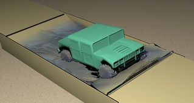

Mridul Aanjaneya
|
|
Mridul Aanjaneya
|
|
|  | Abstract: Motivated by the desire to investigate vehicle fording scenarios, we analyze four frameworks for the simulation of the fluid-solid interaction problem. While all of these approaches rely on a general multibody dynamics simulation framework that supports impact, contact, and constraint, they differ in (i) the fluid representation; (ii) the simulation methodology; and (iii) the fluid-solid interfacing mechanism. |
(C) Mridul Aanjaneya, All Rights Reserved.


![[PHOTO]](../../images/knight_small.png)